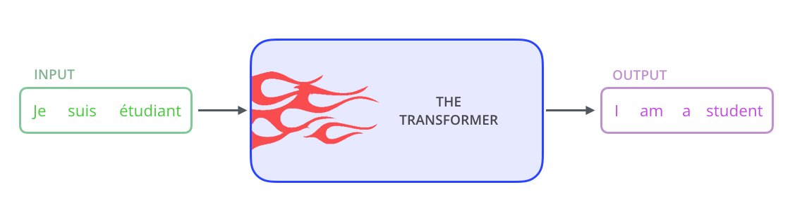
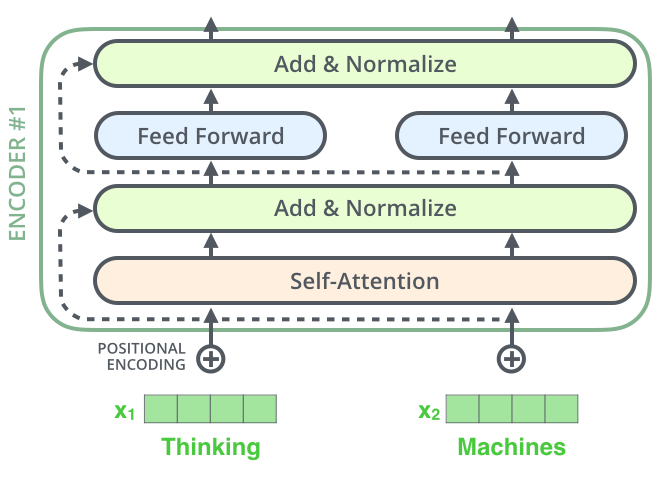

Dịch ngôn ngữ
Encoder và Decoder phối hợp chuyển từ một chuỗi ngôn ngữ sang chuỗi khác.
Encoder–DecoderATTENTION IS ALL YOU NEED· 2017
Một từ có nghĩa hơn khi đặt giữa những từ khác.
Transformer tạo ra những kết nối đó bằng Attention.
NHÌN TỪ TỔNG THỂ
Từ một hộp xử lý đến hai nửa phối hợp.
Chọn một hình để nhìn gần hơn.

Một câu đi vào, một câu dịch đi ra.
Ảnh: Jay Alammar · The Illustrated Transformer · CC BY-NC-SA 4.0
Ý TƯỞNG CỐT LÕI
Mỗi token có thể tổng hợp thông tin từ những token khác trong cùng chuỗi. Hai từ ở xa nhau vẫn có một đường kết nối trực tiếp.
RNN và LSTM truyền biểu diễn qua các bước thời gian nối tiếp. Self-Attention cho phép tính các vị trí trong một lớp song song khi huấn luyện. Khi suy luận, Decoder vẫn sinh token lần lượt.
MULTI-HEAD ATTENTION
Cùng một chuỗi, các attention head có thể tạo ra những phân bố kết nối khác nhau.
Mỗi head dùng các phép chiếu Q, K, V riêng để tổng hợp thông tin. Bản base gốc có 8 head trong mỗi khối Multi-Head Attention; đầu ra được ghép rồi chiếu lại. Không có vai trò ngôn ngữ cố định được gán sẵn cho từng head.
Các kết nối dùng dữ liệu mô phỏng, không phải trọng số đã huấn luyện.
Ô màu là ký hiệu rút gọn cho vector / ma trận. Màu mỗi head chỉ để phân biệt, không gán vai trò ngôn ngữ cố định.
ENCODER → DECODER
Encoder xây dựng ngữ cảnh từ câu nguồn.
Decoder dùng ngữ cảnh đó để tạo câu đích, từng token một.
Bấm chạy để theo dõi luồng dữ liệu.
Bản dịch được đặt sẵn để minh họa quá trình sinh chuỗi. Sơ đồ đọc từ dưới lên.
THEO CÁC ĐƯỜNG NỐI
Ảnh gốc đi cùng chú thích tiếng Việt. Chọn “Sinh từng token” để xem minh họa decoding.

Đọc từ dưới lên: thêm vị trí, Attention, Add & Norm và Feed Forward.
Ảnh: Jay Alammar · The Illustrated Transformer · CC BY-NC-SA 4.0
Chọn một khối trong sơ đồ tương tác dưới đây.
Vẽ lại theo Figure 1 của paper. Mỗi khung nét đứt là một lớp, được xếp chồng 6 lần. Add & Norm dùng thứ tự Post-LN của mô hình gốc.
TỪ MỘT Ý TƯỞNG
Encoder và Decoder phối hợp chuyển từ một chuỗi ngôn ngữ sang chuỗi khác.
Encoder–DecoderCác biến thể thiên về Encoder, như BERT, hỗ trợ nhiều tác vụ hiểu ngôn ngữ.
Biến thể EncoderCác biến thể thiên về Decoder, như GPT, tạo văn bản bằng cách dự đoán token tiếp theo.
Biến thể DecoderCHO NHỮNG AI TÒ MÒ
Mở một cánh cửa. Khám phá theo cách của bạn.
Attention(Q, K, V) = softmax(QKᵀ / √dk)V
Q = XWQ, K = XWK, V = XWV. Mỗi head dùng các ma trận chiếu riêng. Các đầu ra được ghép (Concat), rồi chiếu qua WO.
Lab dùng 8 token, vector đầu vào 4 chiều và dk = 3 để số liệu dễ đọc. Bản base gốc dùng dmodel = 512 và dk = dv = 64 cho mỗi head. Q, K, V và trọng số tại đây được tính nhất quán trong trình duyệt từ dữ liệu mô phỏng; không lấy từ một mô hình đã huấn luyện.
Dữ liệu mô phỏng để học cơ chế. Attention cao không phải bằng chứng đầy đủ cho việc mô hình “hiểu” một quan hệ ngôn ngữ.
Hàng = vị trí truy vấn · Cột = vị trí được nhìn
Đã tắt mask để so sánh: token có thể nhìn tương lai. Đây không phải cách Decoder gốc hoạt động.
Chuỗi Decoder đã nhận
Bắt đầu bằng token đặc biệt <BOS>.
Khi huấn luyện: chuỗi đích được dịch một vị trí, với các token đích đúng làm đầu vào; causal mask cho phép tính các vị trí song song mà không lộ tương lai. Khi suy luận: token vừa sinh được đưa lại vào Decoder. Các xác suất và bản dịch ở đây được đặt sẵn để minh họa.
Kết nối trực tiếp giúp trao đổi thông tin giữa các vị trí xa nhau. Nhưng chuỗi càng dài, số cặp attention càng lớn.
Giảm sự phụ thuộc vào các bước thời gian nối tiếp như RNN.
Hai token có thể tương tác trực tiếp trong cùng một lớp attention.
Với chiều biểu diễn cố định, số điểm attention và bộ nhớ cho ma trận tăng theo n².
Gấp đôi độ dài → gấp bốn số cặp.
Ý TƯỞNG BẮT ĐẦU TỪ ĐÂY
Vaswani và cộng sự · 2017
Đọc bài báo gốc ↗Tham khảo cách minh họa: The Illustrated Transformer — Jay Alammar ↗. Sơ đồ tương tác được vẽ riêng; các ảnh tham khảo có ghi nguồn bên dưới.